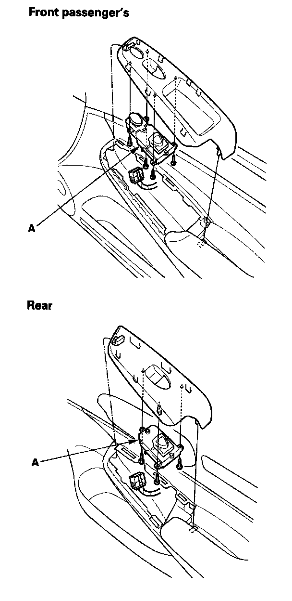
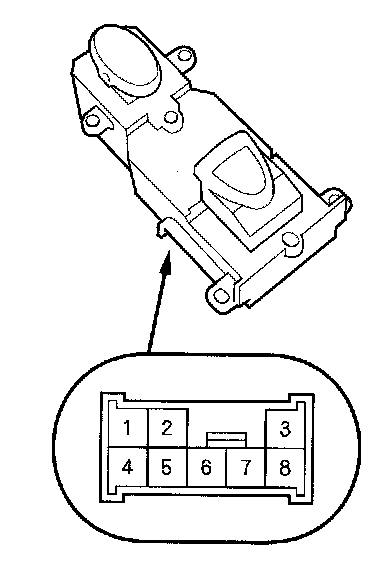
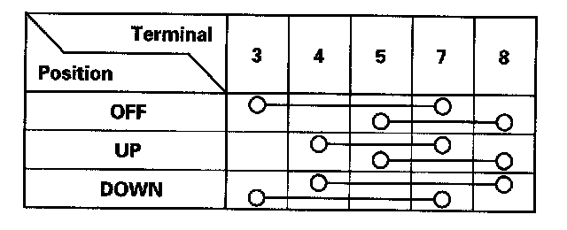

Passenger's Power Window Switch Test/Replacement
Passenger's Power Window Switch Test/Replacement
1. 4-door: Remove the passenger's switch (A).
2-door: Remove the passenger's switch.

NOTE: The illustration shows the 4-door front passenger's door.

2. Check for continuity between the terminals in each switch position according to the table.
3. Connect battery power to the No.4 terminal and ground the No.7 (or No.8) terminal. The switch light should come on.
4. If the continuity or switch light tests is not as specified, remove the screws and replace the switch.
5. Install the switch in the reverse order of removal.